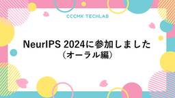

CCCMKホールディングス TECH LABの Tech Blog
https://techblog.cccmkhd.co.jp/
TECH LABのエンジニアが技術情報を発信しています
フィード
LangGraphとDatabricksのGenieによるTable参照AgentアプリをModel Servingで動かしてみました。
CCCMKホールディングス TECH LABの Tech Blog
はじめに Genie アプリケーションの処理の全体図 アプリケーション構築手順 Genieの作成 PATのシークレットへの登録 NotebookからGenieにアクセスする LangGraphのGraphをスクリプトに書き出す Graphの登録 Model Servingへのデプロイ Model Serving Endpointの使い方 まとめ はじめに こんにちは、CCCMKホールディングスAIエンジニアの三浦です。 前回Azure DatabricksでUnity CatalogのTableの内容を参照して回答するAgentアプリケーションをLangGraphで構築した話をご紹介しました。…
4日前

NeurIPS 2024に参加しました（オーラル編）
CCCMKホールディングス TECH LABの Tech Blog
こんにちは。AIエンジニアリンググループの矢澤です。 NeurIPS 2024の参加報告として、これまでチュートリアルや招待講演についての一部を共有しました。 今回は、学会のメインイベントであるオーラルセッションについて、特に気になった発表を紹介したいと思います。 オーラルセッションとは オーラルセッションは、研究者らが投稿した論文の中で、査読の結果特に優れた内容と認められたものを発表するイベントです。 チュートリアルや招待講演と異なり、発表時間は20分しかないので、研究の背景や課題から手法、実験結果などが端的にまとめられています。 そのため、聴講者側もある程度の事前知識が必要となりますが、ど…
5日前

【メディア掲載】ITフリーランス向け案件サイト「フリーランスHub」で紹介されました
CCCMKホールディングス TECH LABの Tech Blog
CCCMKホールディングス TECH LABのTech Blogが、ITフリーランス向け案件サイト「フリーランスHub」で紹介されました。 本ブログがフリーランスエンジニアの皆様のお役に立てれば幸いです。 【タイトル】スキルアップやキャッチアップにつながる！注目の企業テックブログまとめ 【記事URL】https://freelance-hub.jp/column/detail/651/ freelance-hub.jp 【フリーランスHubトップページ】https://freelance-hub.jp/ 【フリーランスHub案件一覧ページ】https://freelance-hub.jp/pr…
10日前
ExpertGenQAによる自動QA生成を試してみました（実装編）
CCCMKホールディングス TECH LABの Tech Blog
こんにちは。AIエンジニアリンググループの矢澤です。よろしくお願いします。 前回の記事で、ExpertGenQAによる自動QA生成の概要や実験結果について話しました。 本記事では、実験で使用したスクリプトを共有し、処理の流れや論文との差異について説明します。 実装 以下では、ExpertGenQAの論文を基にPythonで実装したスクリプトについて説明します。 まずは実装したソースコードを載せます（モジュールのインポートやユーティリティ関数の内容などは省略）。 def generate_qas(documents, n_topics=10, K=5, n_fewshots=3, test_mo…
11日前
LangGraphでAzure DatabricksのTableに自然言語で問い合わせが出来るアプリを作ってみました！
CCCMKホールディングス TECH LABの Tech Blog
はじめに やりたいこと 使用したデータ 利用したLLM データの準備 データセットのダウンロード Tableへの書き込み COMMENTの付与 アプリの構築 LLMとアプリのState rooting normal_chat create_sql execute_sql answer ビルド 動作確認 まとめ はじめに こんにちは、CCCMKホールディングス三浦です。 この前の土日、東京は桜がちょうどきれいに咲いていて、散歩をしながらお花見が出来ました。自分にとってはなんとなく桜を見ることが、一年の節目になってるなぁと感じます。 最近Azure東日本リージョンのDatabricksでModel…
11日前
ExpertGenQAによる自動QA生成を試してみました（概要・実験編）
CCCMKホールディングス TECH LABの Tech Blog
こんにちは。AIエンジニアリンググループの矢澤です。 先日、マーケティング関連の展示会に参加しました。 特に専門家の方の講演が興味深く、ユーザー視点での商品・サービス開発を目指す上で参考になるお話でした。 マーケティングの知識やセンスは奥が深く、一朝一夕に身に付けられるものではないと思いますが、エンジニアのような技術職であってもある程度知っておくべきだと再認識することができました。 近年ではLLMやRAGの技術が発展し、専用のチャットボットを比較的簡単に作れるようになりました。 しかし、課題として想定質問による事前テストやパラメーター調整などが挙げられます。 特に、対象ドメインや参照するデータ…
16日前
LangGraphで"Human-In-The-Loop"を組んでみました。
CCCMKホールディングス TECH LABの Tech Blog
こんにちは、CCCMKホールディングス AIエンジニアの三浦です。 4月ですね！今日インターネットでニュースを見ていたら、個人的にすごくびっくりするニュースを見つけました。その後、今日がエイプリルフールだということを思い出しました・・・。 さて最近Agent開発フレームワークのLangGraphについて調べていたのですが、その中で面白そうなトピックを見つけました。それはAgentの"Human-In-The-Loop"の実装に関するもので、今後Agentシステムを開発する際に導入したい、と思う内容でした。 Agentシステムにおける"Human-In-The-Loop"の役割について考えてみま…
18日前
NeurIPS 2024に参加しました（招待講演編）
CCCMKホールディングス TECH LABの Tech Blog
こんにちは。AIエンジニアリンググループの矢澤です。 先日の記事では、NeurIPS 2024のチュートリアルについて報告しました。 具体的には、私が聴講した発表（LLMの電子透かしと、人間とAIのアライメントに関するチュートリアル）の序盤部分を共有しました。 今回は同学会の招待講演について説明したいと思います。 招待講演とは NeurIPSでは、基本的に研究者らが論文を投稿し、採択された場合に発表を行います（オーラル、ポスター発表）。 しかし上記とは別のセッションとして、学会の前半に招待講演があり、著名な研究者や専門家が業界全体の動向や関連技術などを話す場となっています。1 招待講演は、会場…
19日前
特徴量を運用・公開する仕組みを社内にリリースしました！
CCCMKホールディングス TECH LABの Tech Blog
こんにちは。テックラボの岸部です。 本日は技術ブログというよりも、お仕事紹介ということで、最近社内にリリースした、特徴量を運用・公開する仕組みである「Feature Store」を紹介したいと思います。 Feature Storeのロゴ はじめに いきなりですが、みなさんは特徴量エンジニアリングはお好きでしょうか。 一般にテーブルデータの分類問題の機械学習の精度を向上させるためにデータサイエンティストが取る手段は、大きくは以下の2つかと思います。 特徴量を工夫する(いわゆる特徴量エンジニアリング) 機械学習のアルゴリズムを工夫する 2点目の「機械学習のアルゴリズムを工夫する」については、XGB…
20日前
色々な設定でHugging Face "Diffusers"でDiffusion Modelを学習させて画像生成してみました。
CCCMKホールディングス TECH LABの Tech Blog
こんにちは、CCCMKホールディングスTECH LAB三浦です。 すっかりと暖かくなり、春らしくなりました。近所の学校や保育園で卒業式や卒園式が行われているのを見ると、新しい季節がやって来るんだなぁとしみじみ感じます。 さて、今回は前回に引き続き画像生成の話を紹介させて頂きます。 はじめに 使用したデータ クラスラベル条件付き画像生成 Attention層の数の変更 評価用画像の生成 各パターンによる画像生成結果 気付いたこと Attention Blockを増やすことによる効果 クラスラベル条件による効果 まとめ はじめに 前回Hugging Faceの"Diffusers"というライブラリ…
25日前
Azureの認定資格「AI-102」を受験しました
CCCMKホールディングス TECH LABの Tech Blog
こんにちは。AIエンジニアリンググループの矢澤です。 最近、プログラミングの際に使うエディタのカラーテーマを変えてみました。 Solarizedは複数のエディタに搭載されている有名なテーマですが、Web上の記事を読んで「制限がある中で作られた計算し尽された配色」ということを知り、特にブルーとイエローから出発してLightとDarkの両方の色を選んでいったエピソードは、非常に興味深いものでした。1 今後も気分転換として、複数のカラーを使い分けていきたいです。 AI関連では、先日Azureの認定資格である「Microsoft Certified: Azure AI Engineer Associa…
1ヶ月前
NeurIPS 2024に参加しました（チュートリアル編）
CCCMKホールディングス TECH LABの Tech Blog
こんにちは。AIエンジニアリンググループの矢澤です。 先日の記事でNeurIPS 2024の概要やバンクーバーでの生活について共有しました。 今回は具体的な内容として、イベント前半のチュートリアルで特に気になった発表について、独断で紹介させていただきます。 文量が多いため、その他のセッション（招待講演、オーラル発表、チュートリアル）の内容については、別の記事で説明したいと思います。 チュートリアル チュートリアルでは、AIやML関連の比較的広めなテーマについて、これまでの研究の流れや技術の詳細を説明する流れとなっていました。 発表の最初の方は、専門外の人にも分かるような内容も多かったのですが、…
1ヶ月前
Hugging Face "Diffusers"でDiffusion Modelの構築に取り組んでみました。
CCCMKホールディングス TECH LABの Tech Blog
Diffusersを使って基本系のDiffusion Modelの構築に取り組んでみた話をまとめました。
1ヶ月前
Virtual Try-Onを実現する"TryOnDiffusion"について調べてみました。
CCCMKホールディングス TECH LABの Tech Blog
こんにちは、CCCMKホールディングス三浦です。 前回、二つの画像を融合する技術について調べたことをまとめたのですが、今回はまた違う方向の"画像の融合"技術について取り上げてみたいと思います。 バーチャル試着を実現する技術"Virtual Try-On" 人物画像と服の画像を入力すると、その人物がその服を自然な様子で着ている画像を出力する。これが実現できると、スマートフォンやパソコン上で様々な服の試着が可能になります。けっこう見聞きする技術だったのですが、最近こういった技術が"Virtual Try-On"と呼ばれていることを知りました。 いくつかVirtual Try-Onの論文を見ていると…
1ヶ月前
NVIDIA A100でのtorch.compileの効果を検証
CCCMKホールディングス TECH LABの Tech Blog
こんにちは。テックラボの高橋です。 pytorchにtorch.compileという機能があることをご存知でしょうか？ torch 2.0から導入されたこの機能を利用することで、推論処理や学習処理を高速化できるとのことです。 今回はNVIDIA A100を用いて、torch.compileがどのくらい効果があるか検証してみました。 環境 pytorch 2.6 GPU NVIDIA A100 80G ubuntu 20.04.6 nvidia-docker 24.0.9-1 モデル tokyotech-llm/Llama-3.1-Swallow-8B-Instruct-v0.3 torch.c…
1ヶ月前
2つの画像を融合する"Image Fusion via Vision-Language Model"という論文を読んだので内容をまとめてみました。
CCCMKホールディングス TECH LABの Tech Blog
はじめに 該当するタスク FILMとは Text Feature Fusion Text-Guided Vision Feature Fusion Vision Feature Decoding Fine-Tuningはどうするのか？ 生成される融合画像 赤外線-可視光画像融合 マルチ露光画像融合 まとめ はじめに こんにちは、CCCMKホールディングス三浦です。 昨年末に参加したAI・機械学習の学会"NeurIPS 2024"で2つの画像を合成し、2つの画像の特徴を持った1つの画像を生成する、という技術の存在を知り、画像合成について調べてみたいな、と考えていました。 調べてみると、2つの画像…
2ヶ月前
相関係数を正しく使用する
CCCMKホールディングス TECH LABの Tech Blog
こんにちは。 テックラボの岸部です。 本日はデータ分析で身近である相関係数の実装について色々調べた内容を共有したいと思います。 はじめに ～これは架空の話です～ ある企業にデータサイエンティストがいました。 とあるアンケートデータを分析しています。 ある設問で、「はい」か「いいえ」と答えた人の違いを分析すべく、 アンケートの回答データをpandasのデータフレームで読み込み、相関係数をcorrメソッドを適用して算出しました。 相関係数の値が大きい(小さい)変数を分析レポートにまとめました。 この話を聞いて、「大丈夫か？」と思えた方は立派なデータサイエンティストでしょう(大げさ？)。 「え、別に…
2ヶ月前
Azure App Service（Container Linux環境）のPythonアプリにDatadogを仕込む
CCCMKホールディングス TECH LABの Tech Blog
テックラボの高橋です。今回は小ネタです。 Azure App ServiceのContainer Linux環境ではDockerコンテナを動かすことができます。 最近、オブザーバビリティツールであるDatadogをこの環境に組み込む機会がありました。 Datadogのドキュメントによると、以下のようにDockerfileに記述することでDatadogにログやトレースを送ることができるようです。 COPY --from=datadog/serverless-init:1 /datadog-init /app/datadog-init RUN pip install --target /dd_tr…
2ヶ月前
長いドキュメントをLLMに参照させる"Chain of Agents"というアプローチについて論文を読みました。
CCCMKホールディングス TECH LABの Tech Blog
こんにちは、CCCMKホールディングスTECH LAB三浦です。 はじめに もうすぐ2月も終わりです。今期もあと残すところ1か月なので、来期に取り組みたい研究テーマを探すため、最近は色々な論文に目を通しています。今回も最近読んで面白いと感じた論文の内容を紹介させてください。 今回読んだ論文は次の論文です。 Title: Chain of Agents: Large Language Models Collaborating on Long-Context Tasks Authors: Yusen Zhang, Ruoxi Sun, Yanfei Chen, Tomas Pfister, Rui…
2ヶ月前
SentenceTransformerを用いて文字の意味を加味した特徴量を作成し、有用性を検証しました。
CCCMKホールディングス TECH LABの Tech Blog
こんにちは。データサイエンスグループの木下です。 今回は、SentenceTransformerを用いて作成した特徴量の有用性を検証したという内容になります。 背景 テーブルデータを用いて機械学習モデルを作成する際、カラム名自体や値の文字通りの意味を加味することができません。 例えば、「職業」というカラムに「学生」「社会人」「主婦」などの値が格納されていたとします。 このようなカテゴリー値の場合は、一般的にはone-hot エンコーディングやラベルエンコーディングをして、 数値に変換してから機械学習モデルに入力します。 この際、「職業」というカラムや、「学生」「社会人」「主婦」という値の、"文…
2ヶ月前
"DeepRAG: Thinking to Retrieval Step by Step for Large Language Models"という論文を読みました。
CCCMKホールディングス TECH LABの Tech Blog
こんにちは、CCCMKホールディングスTECH LABの三浦です。 最近日本の歴史の漫画を読んでいました。子どもの頃は近代～現代の内容は難しい、と感じていたのですが、大人になってから改めて見ると学ぶことがとても多く、考えさせられることがたくさんあるんだな、と感じました。 はじめに 検索は、本当にいつも必要なのか？ DeepRAGのステップ DeepRAGの最適化 データセットの生成 Imitation Learning Chain of Calibration まとめ はじめに 前回"The Surprising Effectiveness of Test-Time Training for …
2ヶ月前
"The Surprising Effectiveness of Test-Time Training for Abstract Reasoning"という論文を読みました。
CCCMKホールディングス TECH LABの Tech Blog
こんにちは、CCCMKホールディングスTECH LABの三浦です。 いつの間にか2月も中旬になりました。2月3月はあっという間に過ぎていく印象があります。きっと気が付いたら4月になっているんだろうな、と思います。 "Test-Time" 論文について Test-Time Training? TTTの学習データセット TTTのLoss TTTの後の推論の工夫 複数の回答を生成するための手法 回答の選び方 まとめ "Test-Time" 最近LLM周りで"Test-Time Scaling"というフレーズを聞く機会があって、いったい何のことだろう？？と気になって調べていました。全ての情報を追い切れ…
2ヶ月前
特徴量のスパース性と特徴量重要度の関係性について調査しました。
CCCMKホールディングス TECH LABの Tech Blog
こんにちは。データサイエンスグループの木下です。 今回は、スパースなカラムを含むデータにおける、二値分類モデルを作る際のモデルの性能に関して実験してみました。 背景 マーケティングの世界では、施策の効果を評価するために、 性別や年代などのデモグラフィック情報や、オンライン・オフラインの行動データを活用し、 特定の施策に対する反応を予測する二値分類モデルが用いられることがあります。 それらの説明変数の中で、行動データは特定期間内で0になるユーザーが多く、疎(スパース)なデータになっていることが想定されます。一方、デモグラフィックデータは基本的に全てのユーザーのデータを有しているので、密なデータに…
2ヶ月前
RAGの手法"RAPTOR"のドキュメントの木構造化を試してみました。
CCCMKホールディングス TECH LABの Tech Blog
こんにちは、CCCMKホールディングス TECH LABの三浦です。 歳を重ねていくと、なんとなく一年の中でのこの時期は特に体調を崩しやすいな、ということが分かってきます。私にとっては今の時期がちょうどその時期で、今年もやっぱり風邪を引いてしまいました。来年はもう少し自分の"勘"を信じて風邪を引かないようにしようと思います。 さて、最近大量のドキュメントからその中に含まれる重要なトピックスだけを抜き出すことが出来ないかな、と考える機会がありました。文章量が多いドキュメントは一度にLLMに取り込むことが難しいため、なんらかの形でドキュメントを細かく分ける必要があります。一番簡単なアイデアはドキュ…
2ヶ月前
Cross-Domain Recommendationの調査論文を読んでみました。
CCCMKホールディングス TECH LABの Tech Blog
こんにちは、データサイエンスグループの木下です。 今回は、RecSys2024でもセクションの一つとして取り上げられていた、 Cross-Domain Recommendation(CDR)について調査した Cross-Domain Recommendation: Challenges, Progress, and Prospectsという論文（リサーチペーパー）について紹介いたします。この論文は2021年に発表されました。 RecSys2024ではSpotifyなどの企業が実際のレコメンドアルゴリズムにCDRを取り入れているという話がありました。 一方、CDRに関しては日本語のまとめがほとん…
3ヶ月前
LLMの性能を測る指標をベンチマーク結果から取得する方法について、論文を読みました。
CCCMKホールディングス TECH LABの Tech Blog
こんにちは、CCCMKホールディングス TECH LABの三浦です。 昨年参加したAI・機械学習カンファレンス"NeurIPS2024"のポスターセッションで発表されていた論文の中で、面白いアプローチだな、と印象に残っている論文がいくつかあります。 そのうちの1つがこちらの論文です。 Title: Observational Scaling Laws and the Predictability of Language Model Performance Author: Yangjun Ruan, Chris J. Maddison, Tatsunori Hashimoto Submit: 1…
3ヶ月前
Contrastive Activation Addition(CAA)の振る舞いのベクトルを抽出して可視化してみる。
CCCMKホールディングス TECH LABの Tech Blog
対象にした振る舞い 使用したデータセット 対象にするLLM モデルのどこに注目するのか 可視化方法 PyTorchで中間表現を取得する方法 実行コードの一部の紹介 いくつかの散布図を描画 なぜAとBで傾向が違うのか・・・ まとめ こんにちは、CCCMKホールディングスTECH LABの三浦です。 前回Contrastive Activation Addition(CAA)という、LLMの振る舞いを調整するテクニックに関する論文の内容をご紹介しました。 techblog.cccmkhd.co.jp とても面白い内容だったので、自分でも試してみたいと思っていました。 CAAはLLMの振る舞いを調整…
3ヶ月前
Scikit-LLMでテキスト分類しました
CCCMKホールディングス TECH LABの Tech Blog
あけましておめでとうございます。 データサイエンスグループの木下です。 今回は、Scikit-LLMというライブラリを紹介いたします。 Scikit-LLMとは skllm.beastbyte.ai Scikit-LLMとは、LLMをScikit-Learnのように扱うことができるライブラリです。 Scikit-LearnユーザーになじみやすいAPI設計になっており、学習コストが低いのが特徴です。 上記のドキュメントによると、主なタスクは Text-Classification 指定したラベルで文章分類ができます。 Zero-shotとFew-Shot、CoT(Chain of Thought…
3ヶ月前
Azure OpenAIによるコードレビューを試してみました
CCCMKホールディングス TECH LABの Tech Blog
こんにちは、AIエンジニアリンググループの矢澤です。 最近テストの採点や添削指導について考える機会がありました。 選択式の問題や数学の定理のような答えが一つに決まっている問題はともかく、自由記述形式の問題などでは正確な採点が難しいこともあるのではないかと感じ、教育現場などではどのように対応しているのかというのが気になりました。 JDLAが実施している「Generative AI Test」では生成AIが採点補佐を行うという話題もありましたが、将来的には入試などでもAIによる採点が一部使われるようになるのかもしれません。 生成AIは近年特に発展し、単純な質問回答やアイデア出しだけでなく、プログラ…
3ヶ月前
LLMの振る舞いを調整するContrastive Activation Addition(CAA)について、論文を読んで手法を調べてみました。
CCCMKホールディングス TECH LABの Tech Blog
こんにちは、CCCMKホールディングス TECH LABの三浦です。 成人式の休日も終わり、そろそろ2025年も本格スタート、という気持ちになってきました。今年は"整理整頓"をもっとうまく出来るようになりたいな・・・と考えています。身の回りもそうですが、自分のタスクなども定期的に整理整頓するようにしたいと思っています。 大規模なデータで学習されたLLMは、様々なタスクに柔軟に対応することが出来ます。なぜ柔軟に対応することが出来るのか、考えると不思議な話ですよね。学習済みのLLMの内部にはどのような情報がどのように格納されているのかを知ることで、その答えに近づけると考えられます。 最近LLMの内…
3ヶ月前